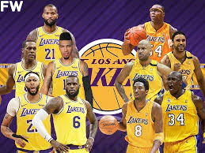

Lejkersi su osnovani u Detroitu, pre nego što su prešli u Mineapolis, gde su usvojili svoje sadašnje ime po nadimku te države i osvojili pet naslova prvaka u raznim ligama, pre nego što su prešli u Los Anđeles. Krajem 1970ih i tokom 1980ih, popularnost Lejkersa je porasla, što ju je učinilo jednim od najuspešnijih NBA klubova, sa zvezdama kao što su Karim Abdul-Džabar i Medžik Džonson i trener Pet Rajli, osvojivši pet titula u tom periodu, uključujući i tri protiv najvećih rivala Boston Seltiksa. Tokom 2000ih, trio Fil Džekson, Šakil O'Nil i Kobi Brajant je doneo tri uzastopne titule pre nego što se raspao nakon odlaska O’Nila u Majami Hit. 2009. Lejkersi su osvojili 15. titulu pobedivši Orlando medžik. To je četvrta titula Kobija Brajanta a prva otkad je razdvojen njegov tandem sa O'Nilom. Lejkersi su sa 16 titula drugi tim po broju titula u NBA ligi.
